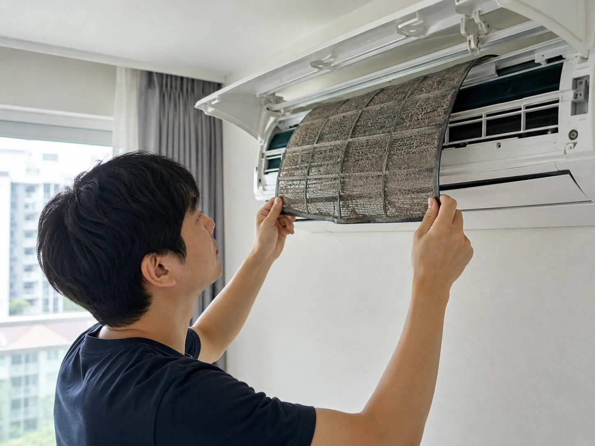
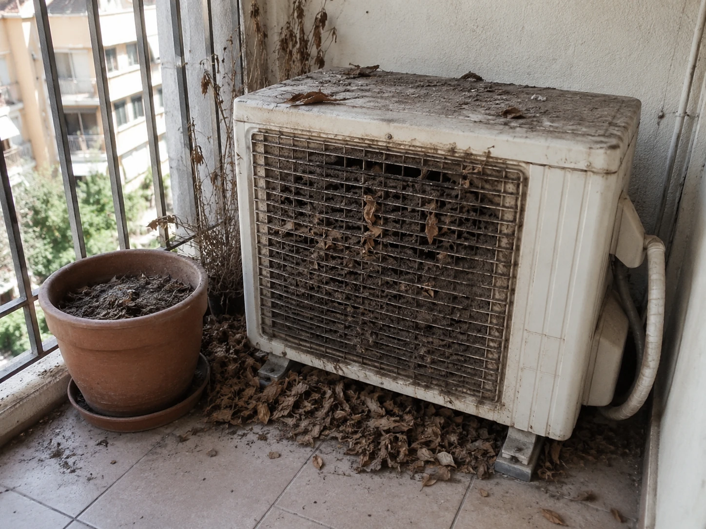
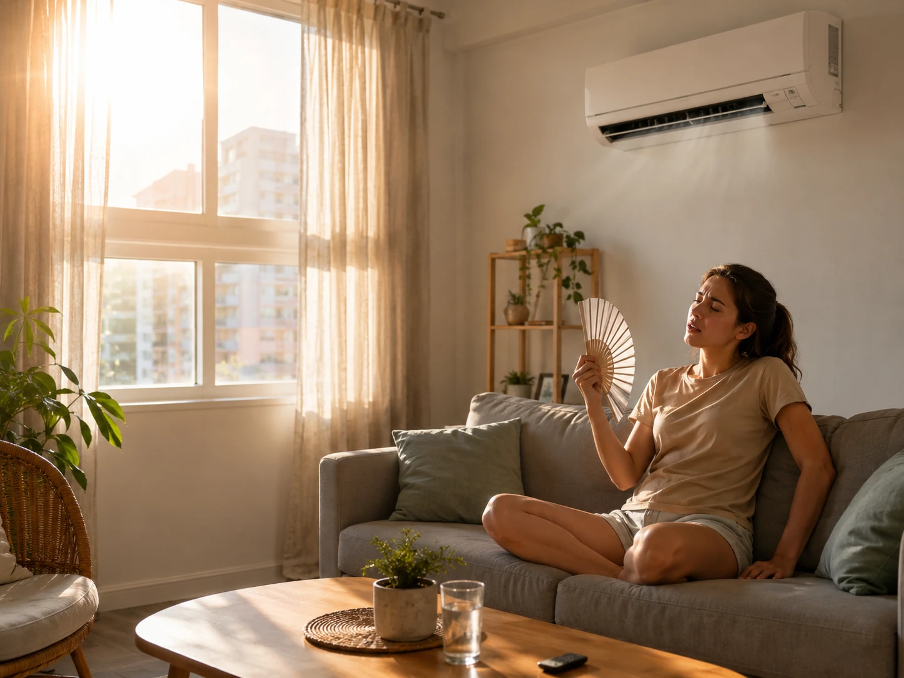
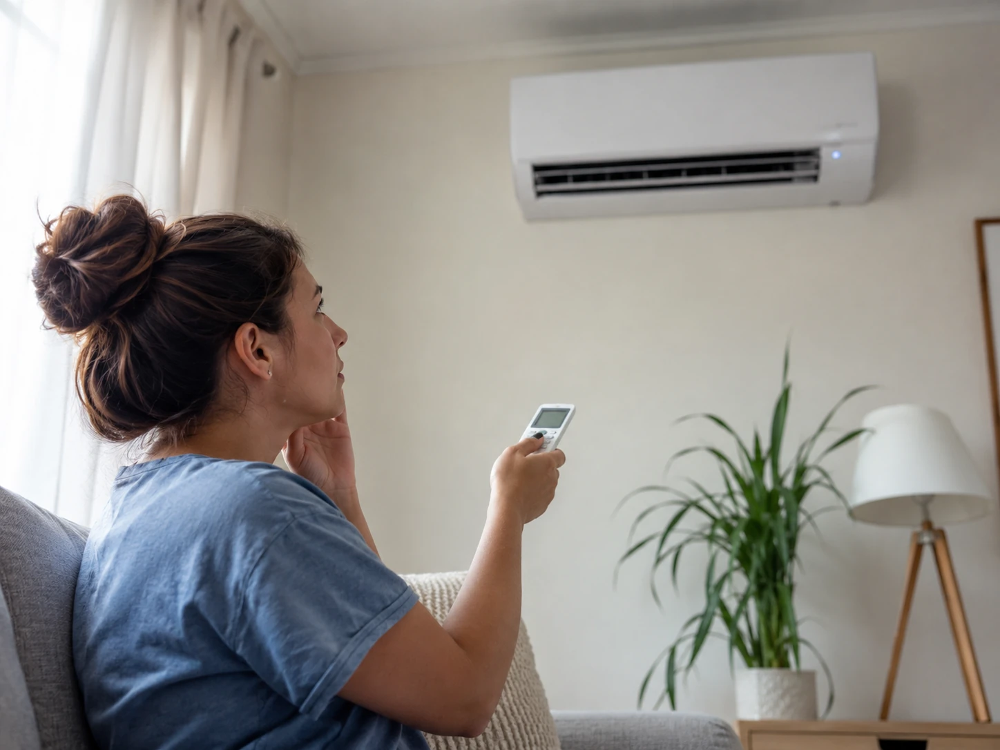
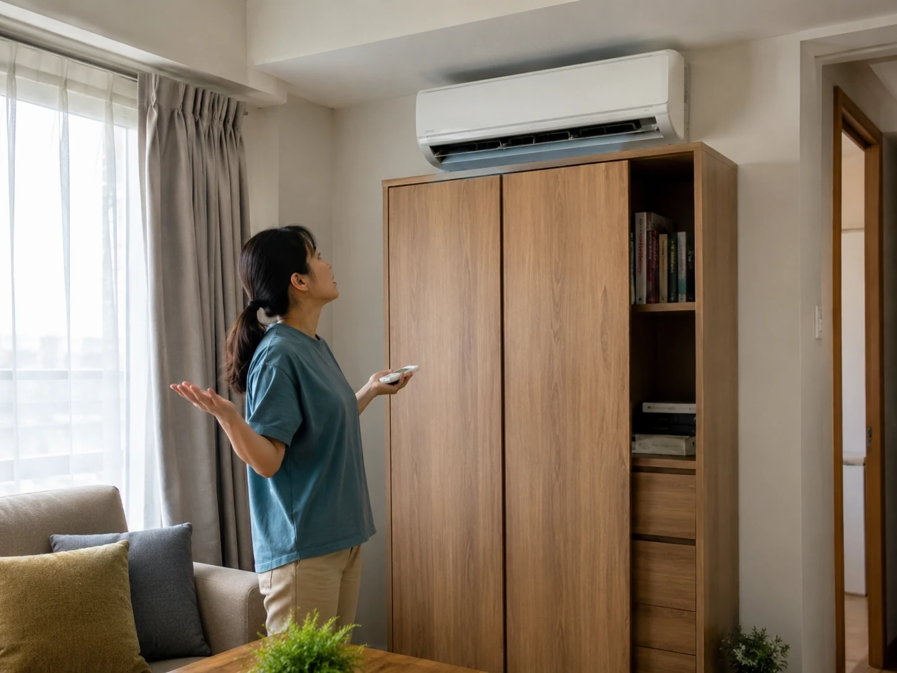

에어컨을 틀었는데도 방이 안 시원하다면, 고장이라고 단정하기 전에 볼 것들
분명 에어컨을 켰는데 방이 시원해지지 않는 날이 있습니다. 리모컨 온도는 낮춰져 있고 바람도 나오는데, 이상하게 방 안 공기는 미지근하면 슬슬 짜증이 올라오죠.
여름마다 에어컨 안 시원함 문제는 반복됩니다. 어떤 분은 바로 냉매 부족이나 고장을 의심하고, 어떤 분은 “필터 청소만 해도 달라진다”고 말합니다. 저는 이 문제도 한쪽 말만 믿으면 돈을 쓰거나 시간을 버릴 수 있다고 봅니다.
개인적으로 에어컨 냉방 효과는 기계 성능만이 아니라 집 구조, 햇빛, 필터, 실외기, 사용 습관이 함께 만드는 결과라고 생각합니다. 그래서 오늘은 에어컨 고장인지 아닌지 판단하기 전에 확인할 부분을 현실적으로 정리해보겠습니다.

냉매가 부족하다는 말, 듣자마자 기사님부터 불러야 할까요?
에어컨이 안 시원하면 가장 먼저 떠오르는 말이 냉매 부족입니다. 물론 냉매 문제가 실제 원인일 수 있습니다. 그런데 저는 처음부터 냉매만 의심하는 건 조금 성급하다고 봅니다. 필터가 막혔거나 실외기 주변 통풍이 안 되거나, 햇빛이 강하게 들어오는 방일 수도 있습니다.
가장 먼저 해볼 것은 바람 온도와 바람 세기를 보는 것입니다. 실내기에서 나오는 바람 자체가 미지근한지, 아니면 바람은 차가운데 방 전체가 안 시원한지 구분해야 합니다. 이 둘은 원인이 다를 수 있습니다.
저라면 먼저 필터를 빼서 먼지를 확인하겠습니다. 필터에 먼지가 두껍게 붙어 있으면 공기 흐름이 줄고 냉방 효과가 떨어집니다. 필터 청소는 돈이 들지 않으면서도 바로 확인 가능한 부분입니다.
에어컨 냉방 효과가 떨어졌다고 느껴질 때, 무조건 고장 수리부터 떠올리기보다 기본 점검을 해보는 게 좋습니다. 생각보다 단순한 문제가 원인인 경우도 있습니다.

방이 안 시원한 진짜 이유가 에어컨이 아니라 집 구조라면 억울하지 않을까요?
여기서 많은 분들이 공감하실 겁니다. 같은 에어컨을 써도 어떤 집은 금방 시원해지고, 어떤 집은 한참을 틀어도 미지근합니다. 저는 이 차이가 집 구조에서 꽤 많이 나온다고 봅니다.
서향 방, 꼭대기 층, 단열이 약한 창문, 커튼 없는 큰 창, 문이 열린 복도 구조는 냉기가 빠르게 퍼지거나 열이 계속 들어올 수 있습니다. 이 경우 에어컨이 열심히 돌아도 방 안 온도가 쉽게 내려가지 않습니다.
에어컨 전기세가 걱정돼서 자주 껐다 켰다 하는 습관도 냉방감을 떨어뜨릴 수 있습니다. 이미 뜨거워진 방을 다시 식히는 데 시간이 걸리기 때문입니다. 물론 하루 종일 무조건 켜두라는 뜻은 아닙니다. 상황에 따라 적정 온도로 유지하는 쪽이 더 편할 때가 있습니다.
개인적으로는 암막 커튼이나 블라인드, 문 닫기, 선풍기 방향 조절 같은 기본 조치가 생각보다 효과적이라고 느꼈습니다. 실내 냉방 방법은 기계 하나에만 기대면 답답해집니다.

실외기 주변만 봐도 답이 나오는 경우가 있는데, 이건 왜 자주 놓칠까요?
에어컨은 실내기만 보는 가전이 아닙니다. 실외기가 열을 밖으로 빼내야 냉방이 제대로 됩니다. 그런데 실외기 주변에 짐이 쌓여 있거나, 바람이 빠지는 공간이 막혀 있으면 효율이 떨어질 수 있습니다.
저는 에어컨 안 시원함 문제에서 실외기 주변을 놓치는 경우가 정말 많다고 봅니다. 베란다에 물건을 쌓아두거나, 실외기실 문을 닫아두거나, 뜨거운 공기가 빠져나갈 길이 부족하면 에어컨은 계속 힘들게 돌아갑니다.
물론 실외기 점검은 안전이 우선입니다. 무리하게 만지거나 분해하지 말고, 접근 가능한 범위에서 통풍을 막는 물건이 있는지만 확인하는 것이 좋습니다. 이상한 소음, 물 샘, 차단기 문제, 계속 미지근한 바람이 나온다면 전문가 점검이 필요할 수 있습니다.

에어컨이 안 시원할 때 바로 고장이라고 단정하면 불필요한 비용이 생길 수 있고, 반대로 계속 버티면 더 큰 문제를 놓칠 수도 있습니다. 저는 그래서 단계적으로 보는 방식이 가장 현실적이라고 생각합니다.
필터, 설정 온도, 운전 모드, 실외기 통풍, 햇빛, 문 열림, 선풍기 활용까지 확인한 뒤에도 바람 자체가 계속 미지근하다면 그때는 점검을 고려하는 게 좋습니다. 에어컨 냉방 효과는 작은 조건들이 모여서 만들어지는 결과입니다.

여러분은 에어컨이 안 시원하면 바로 고장부터 의심하시나요, 아니면 필터와 실외기부터 보시나요. 저는 돈이 드는 점검 전에 직접 확인할 수 있는 것부터 보는 쪽입니다. 다만 바람 자체가 계속 미지근하거나 이상 증상이 있다면 전문가 점검을 미루지 않는 게 좋습니다.
관련 키워드: 에어컨 안 시원함, 에어컨 냉방 효과, 에어컨 전기세, 실내 냉방 방법, 에어컨 필터 청소, 실외기 통풍